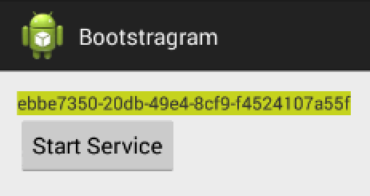

Service to Activity Communication With The Android SDK
I’m an experienced iOS developer but still consider myself a noob regarding Android development. Never mind, I still want to share my latest experiment with the Android SDK: how to run a long operation in the background while still updating the UI regularly?
Where AsyncTask won’t do the job…
The Android SDK provides a convenient object to perform background operations
that will need to provide a UI feedback: AsyncTask. But as
Android’s documentation says:
AsyncTasks should ideally be used for short operations (a few seconds at the most.)
The question then arises: what should we use when a longer background operation is needed?
Well, guess what? It depends…
Searching for an answer to this question on services like StackOverflow ends up
being more confusing than helpful. Many questions are asked in
this area but no clear answer appears. But depending on the specific aspects of
each question, many keywords appear to help getting our quest further:
Services, Handlers, etc.
Let’s give Services a try
Ideally, I wanted to find something similar to the KVO mechanism in iOS.
I decided to give Services a try and developed a POC you can find on
my bootstragram-android repository on GitHub.
The main reason why I picked Services over other solutions is that I wanted to
be able to share any kind of objects, not only Serializable and Parcelable
ones. This constraint eliminated a solution based on a
LocalBroadcastManager as from my understanding,
objects that can be passed with the Intent (ie Extra) have to be
Serializable or Parcelable.
My objectives for this POC were:
- Create a background operation that will live as long as my app, no less.
- This operation must run continously and must update some kind of state at a relatively high-frequency.
- The user must be able to get a UI representation of that state without being blocked on one activiy in particular.
Some notes about it went follow.
The POC Story
The pitch for the POC is as silly as can be. The app will generate in the background a new hex-string every 2 seconds. It will have to be displayed in a screen with a new color. Wow! I’m sure this app would be a hit on the Google Play Store!
Create a Service
When you create a Service, you need to declare it in your app manifest. I made
mine private to my app but it’s not required.
<application ...>
....
<service android:name=".services.RandomEventsService"
android:exported="false" >
</service>
....
</application>
The service itself is a subclass of IntentService (which
provides a convenient onHandleIntent method to override) doing very simple
things:
protected void onHandleIntent(Intent intent) {
while (true) {
final RandomSingleton singleton = RandomSingleton.getInstance();
singleton.increment();
long endTime = System.currentTimeMillis() + 2 * 1000;
while (System.currentTimeMillis() < endTime) {
synchronized (this) {
try {
wait(endTime - System.currentTimeMillis());
} catch (Exception e) {
Log.e(TAG, "Couldn't sleep in peace", e);
}
}
singleton.increment();
}
}
}
The service just runs continously and wakes up every 2 seconds to update the
RandomSingleton singleton object via the increment() method: objectives 1
and 2 are achieved.
Here is the full source code.
The service is started via a button in an activity:
public void onClick(View v) {
Intent intent = new Intent(ServiceFeedbackActivity.this, RandomEventsService.class);
startService(intent);
}
UI Representation and Notifications
We still have objective 3 to achieve. To do so:
- I made my
RandomSingletona subclass ofContentObservable - I created an activity using a subclass of
ContentObserver, observingRandomSingleton - Then I made
RandomSingletoncalldispatchChange(...)at the end of theincrement()method
And that’s it.
The Result

Conclusion
After a frustrating research that had made me more confused than confident about my problem, I found out that the actual implementation was pretty straightforward and easier to implement than I expected.
Nevertheless, I’m still curious of feedbacks you might have about this code and I invite you to get in touch via GitHub or Twitter if you want to engage a discussion about this page (in particular if you know a better way to do a Service to UI communication).